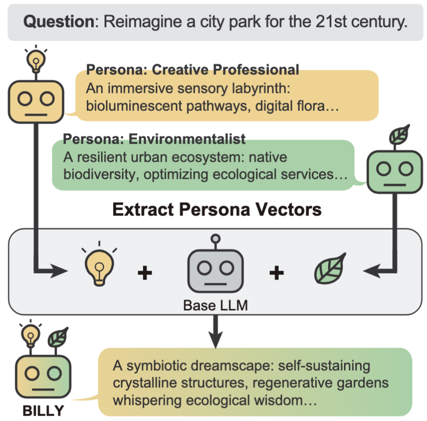
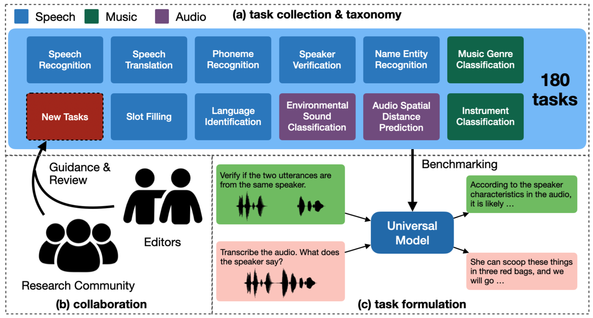
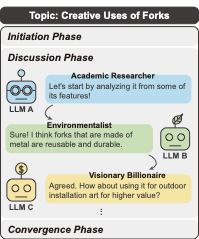

BILLY: Steering Large Language Models via Merging Persona Vectors for Creative Generation
Tsung-Min Pai, Jui-I Wang, Li-Chun Lu, Shao-Hua Sun, Hung-yi Lee, Kai-Wei Chang
A novel method that merges persona vectors of LLMs to enhance creativity, boosting originality by 15% and reducing costs by 95% compared to multi-LLM baselines.

Dynamic-SUPERB Phase-2: An Open Benchmark for Comprehensive Evaluation of Spoken Language Models
Chien-yu Huang, Wei-Chih Chen, et al..., Tsung-Min Pai, et al..., Hung-yi Lee
Contributed the "Covid19CoughAudioClassification" task to this expanding benchmark for evaluating universal spoken language models.

LLM Discussion: Enhancing the Creativity of Large Language Models via Discussion Framework and Role-Play
Li-Chun Lu*, Shou-Jen Chen*, Tsung-Min Pai, Chan-Hung Yu, Hung-yi Lee, Shao-Hua Sun
Developed a multi-agent discussion framework using role-play that boosted LLM creativity scores by 20% over existing methods.